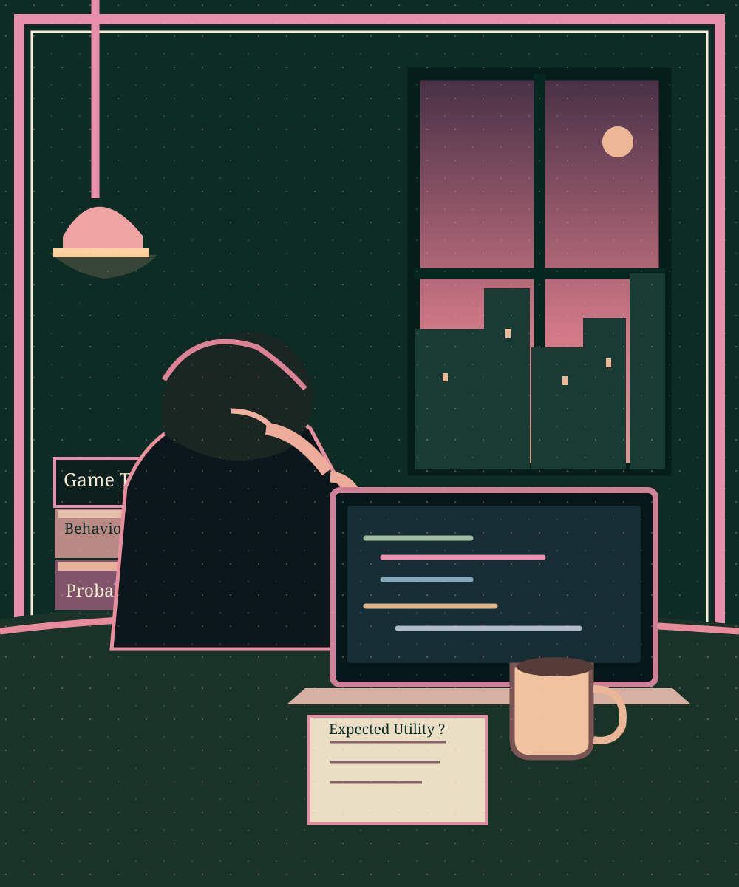

Loading public manuscript…
Expected_utility
Về trái tim, lý trí và những quyết định mà ta không bao giờ biết kết quả.
ĐỌC CHƯƠNG →DECISION TREE ↘Art is a symbolic reconstruction, not a photograph or a factual model.
Về trái tim, lý trí và những quyết định mà ta không bao giờ biết kết quả.
ĐỌC CHƯƠNG →DECISION TREE ↘Art is a symbolic reconstruction, not a photograph or a factual model.
Loading public manuscript…

THE ARTIFACT / COUNTERFACTUALS
Với mỗi quyết định, mình chỉ được quan sát một nhánh. This interaction does not predict a real person's feelings; the outcome of every path is intentionally unknown.
E[U(a)] = Σ P(outcome | a) × U(outcome, a) — here neither the probabilities nor utilities are known. No score is calculated.